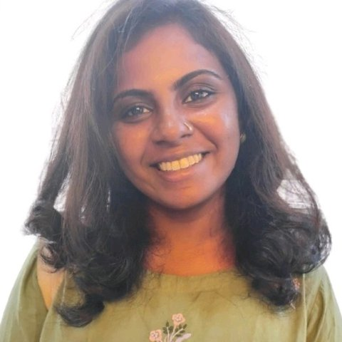

Nivetha Murugesan, PhD
Postdoctoral Researcher · Centre for Brain Research, Indian Institute of Science, Bangalore, India
I work in statistical and population genomics, building and applying methods to understand how genetic variation shapes complex traits and disease. My current focus is South Asian human genomics, including autosomal and X-chromosome genetics, polygenic risk prediction, and GWAS with downstream and causal analyses of glycemic, inflammatory, renal, neuropsychiatric and cognitive traits. I am increasingly interested in integrating multi-omics and AI/ML approaches to understand complex human traits and disease, with potential applications in precision medicine.
Research interests
- Statistical genetics
- GWAS & fine-mapping
- X-chromosome genomics
- Polygenic risk scores
- South Asian genomics
- Gene prioritization
- Mendelian randomization & causal inference
- Glycemic & diabetes genetics
- Inflammation & renal function
- Neuropsychiatric genomics
- Population & evolutionary genomics
- Machine learning for genomics
- Multi-omics & precision medicine
Current research
A South Asian X chromosome resource
Developed an X chromosome-specific imputation reference panel and standardized QC and association workflows for South Asian cohorts, enabling X-linked GWAS and analysis of sex-differential genetic effects.
Polygenic risk prediction
Building and evaluating PRS-based models for genetic risk stratification in complex diseases, with train-test validation and sensitivity and specificity assessment.
GWAS and post-GWAS of metabolic and clinical traits
Large-scale GWAS and gene burden tests, followed by fine-mapping, gene-set enrichment, eQTL colocalization and gene prioritization to move from association signals towards candidate genes and biomarkers.
Causal inference
Mendelian randomization and related causal analyses to investigate relationships between glycemic, inflammatory, renal and other traits and disease outcomes.
Background
PhD, Biological Sciences, IISER Tirupati (2017–2024). My thesis investigated the evolution of colour-pattern traits in squirrels and other rodents by combining population genomics, quantitative image analysis and evolutionary modelling, including positive selection analysis across rodent genomes and machine-learning prediction of coat phenotypes. The thesis was shortlisted for the Best PhD Thesis Award of the Indian Society of Evolutionary Biologists (2025).
B.Tech, Biotechnology, Rajalakshmi Engineering College, Anna University (2012–2016).
AI & machine learning training
Postgraduate Program in Artificial Intelligence & Machine Learning
Machine learning, deep learning, neural networks, computer vision, NLP, large language models, retrieval-augmented generation, generative AI, MLOps and model deployment (Docker, Streamlit). Capstone: pneumonia detection from chest X-ray images using CNNs and transfer learning. I am interested in applying these computational approaches to biological and biomedical data, particularly in genomics and multi-omics integration, with potential applications in precision medicine.
Also: AI for Breast Cancer Detection, Johns Hopkins University via Coursera (2025).
Publications & talks
- Murugesan N., D'Souza S., Shijisha A.C., Ligon R.A., Rajamani N. Multifunctional evolution of palm squirrel coat colour and pattern. bioRxiv (2023). doi:10.1101/2023.09.15.557893
- Oral presentation, 59th Annual Meeting of the Association for Tropical Biology and Conservation, Coimbatore (2023).
- Oral presentation, 4th Annual Conference of the Indian Society of Evolutionary Biology, Ahmedabad (2023).
Tools & methods
- R
- Python
- SQL
- Unix / SLURM / PBS
- PLINK · bcftools
- BOLT-LMM · REGENIE
- SAIGE · SuSiE · MAGMA
- Coloc · TwoSampleMR
- PRS-CS · PRSice-2
- scikit-learn · XGBoost · CNNs